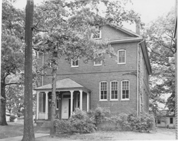

McKeldin LibraryThe $2.5 million McKeldin Library was completed in December of 1957 and opened to students on January 6, 1958. The library was named for then Governor Theodore Roosevelt McKeldin who helped secure funding for the library from the Maryland Legislature in 1955. The new library was designed to hold about 1 million books and smoking was allowed in most parts of the library. A $30 million addition to the library was incorporated in 1990. The main library of any college or university is one of the most important buildings on campus. They serve as epicenters of scholarship and learning and are commonly in or near the physical center of a campus. |
Click "Play" button to view |
|
|

University Library, 1912 (Source: University AlbUM, UMD Archives) |

McKeldin Library, 2007 |
Are you visiting campus? Right-click to download the audio |
The main library of the University of Maryland at College Park also played a role in the Maryland gubernatorial race of 1954. Harry Clifton Byrd, who had served as president of the university from 1935 to 1954 resigned in order to run against the incumbent governor, Theodore Roosevelt McKeldin. Byrd was perhaps the most powerful Democrat in Maryland at the time, and he had been a strong president. According to George H. Callcott, "Harry Clifton Byrd...did more for the University than anyone in its history...College Park enrollment rose from 2,000 to 9,000; the annual state appropriation rose from $1.5 million to $9.8 million; and the plant value rose from $3 million to $37 million" (2005, p. 71). Callcott indicates, however, that a report by the Middle States Association of Colleges and Secondary Schools found among other things that "at College Park, athletics were overwhelming everything, the library was a disgrace, and faculty government hardly existed. The University would loose its accreditation unless changes came immediately" (p. 85). McKeldin seized upon the issue of the library and used it to bludgeon Byrd: "I don't know whether my opponent ever finds time from his political self-aggrandizing activities to read books, but if he does, he should know that a good library is as important to the agricultural student and the industrial engineering student as it is to the student of liberal arts" ("Rival Would Hurt Economic Planning", 1954). Byrd lost the race and McKeldin funded the new library. | ||